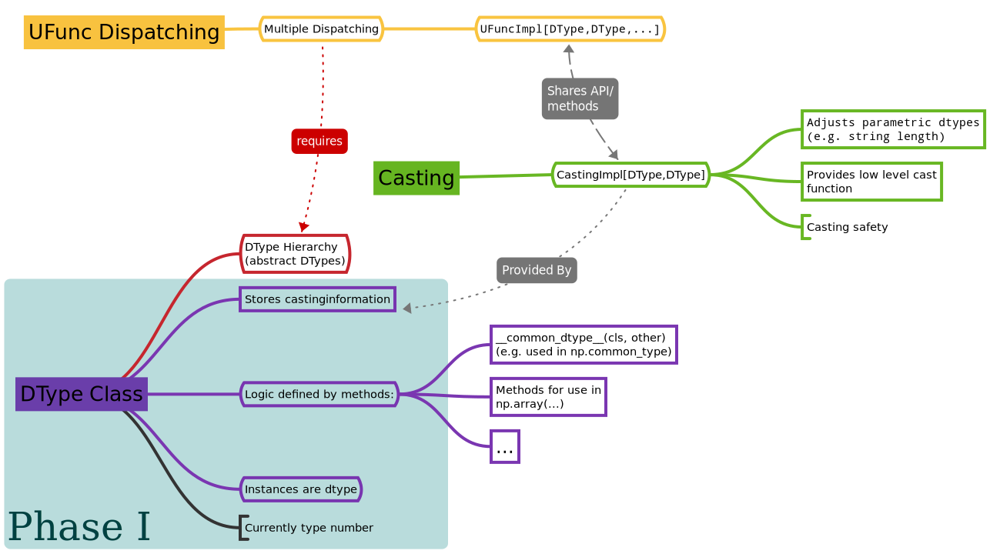

NEP 41 — First step towards a new datatype system#
- title:
First step towards a new Datatype System
- Author:
Sebastian Berg
- Author:
Stéfan van der Walt
- Author:
Matti Picus
- Status:
Accepted
- Type:
Standard Track
- Created:
2020-02-03
- Resolution:
https://mail.python.org/pipermail/numpy-discussion/2020-April/080573.html and https://mail.python.org/pipermail/numpy-discussion/2020-March/080495.html
Note
This NEP is second in a series:
Abstract#
Datatypes in NumPy describe how to interpret each
element in arrays. NumPy provides int, float, and complex numerical
types, as well as string, datetime, and structured datatype capabilities.
The growing Python community, however, has need for more diverse datatypes.
Examples are datatypes with unit information attached (such as meters) or
categorical datatypes (fixed set of possible values).
However, the current NumPy datatype API is too limited to allow the creation
of these.
This NEP is the first step to enable such growth; it will lead to a simpler development path for new datatypes. In the long run the new datatype system will also support the creation of datatypes directly from Python rather than C. Refactoring the datatype API will improve maintainability and facilitate development of both user-defined external datatypes, as well as new features for existing datatypes internal to NumPy.
Motivation and scope#
See also
The user impact section includes examples of what kind of new datatypes will be enabled by the proposed changes in the long run. It may thus help to read these section out of order.
Motivation#
One of the main issues with the current API is the definition of typical functions such as addition and multiplication for parametric datatypes (see also NEP 40) which require additional steps to determine the output type. For example when adding two strings of length 4, the result is a string of length 8, which is different from the input. Similarly, a datatype which embeds a physical unit must calculate the new unit information: dividing a distance by a time results in a speed. A related difficulty is that the current casting rules – the conversion between different datatypes – cannot describe casting for such parametric datatypes implemented outside of NumPy.
This additional functionality for supporting parametric datatypes introduces increased complexity within NumPy itself, and furthermore is not available to external user-defined datatypes. In general the concerns of different datatypes are not well-encapsulated. This burden is exacerbated by the exposure of internal C structures, limiting the addition of new fields (for example to support new sorting methods [new_sort]).
Currently there are many factors which limit the creation of new user-defined datatypes:
Creating casting rules for parametric user-defined dtypes is either impossible or so complex that it has never been attempted.
Type promotion, e.g. the operation deciding that adding float and integer values should return a float value, is very valuable for numeric datatypes but is limited in scope for user-defined and especially parametric datatypes.
Much of the logic (e.g. promotion) is written in single functions instead of being split as methods on the datatype itself.
In the current design datatypes cannot have methods that do not generalize to other datatypes. For example a unit datatype cannot have a
.to_si()method to easily find the datatype which would represent the same values in SI units.
The large need to solve these issues has driven the scientific community to create work-arounds in multiple projects implementing physical units as an array-like class instead of a datatype, which would generalize better across multiple array-likes (Dask, pandas, etc.). Already, Pandas has made a push into the same direction with its extension arrays [pandas_extension_arrays] and undoubtedly the community would be best served if such new features could be common between NumPy, Pandas, and other projects.
Scope#
The proposed refactoring of the datatype system is a large undertaking and thus is proposed to be split into various phases, roughly:
Phase I: Restructure and extend the datatype infrastructure (This NEP 41)
Phase II: Incrementally define or rework API (Detailed largely in NEPs 42/43)
Phase III: Growth of NumPy and Scientific Python Ecosystem capabilities.
For a more detailed accounting of the various phases, see “Plan to Approach the Full Refactor” in the Implementation section below. This NEP proposes to move ahead with the necessary creation of new dtype subclasses (Phase I), and start working on implementing current functionality. Within the context of this NEP all development will be fully private API or use preliminary underscored names which must be changed in the future. Most of the internal and public API choices are part of a second Phase and will be discussed in more detail in the following NEPs 42 and 43. The initial implementation of this NEP will have little or no effect on users, but provides the necessary ground work for incrementally addressing the full rework.
The implementation of this NEP and the following, implied large rework of how datatypes are defined in NumPy is expected to create small incompatibilities (see backward compatibility section). However, a transition requiring large code adaption is not anticipated and not within scope.
Specifically, this NEP makes the following design choices which are discussed in more details in the detailed description section:
Each datatype will be an instance of a subclass of
np.dtype, with most of the datatype-specific logic being implemented as special methods on the class. In the C-API, these correspond to specific slots. In short, forf = np.dtype("f8"),isinstance(f, np.dtype)will remain true, buttype(f)will be a subclass ofnp.dtyperather than justnp.dtypeitself. ThePyArray_ArrFuncswhich are currently stored as a pointer on the instance (asPyArray_Descr->f), should instead be stored on the class as typically done in Python. In the future these may correspond to python side dunder methods. Storage information such as itemsize and byteorder can differ between different dtype instances (e.g. “S3” vs. “S8”) and will remain part of the instance. This means that in the long run the current lowlevel access to dtype methods will be removed (seePyArray_ArrFuncsin NEP 40).The current NumPy scalars will not change, they will not be instances of datatypes. This will also be true for new datatypes, scalars will not be instances of a dtype (although
isinstance(scalar, dtype)may be made to returnTruewhen appropriate).
Detailed technical decisions to follow in NEP 42.
Further, the public API will be designed in a way that is extensible in the future:
All new C-API functions provided to the user will hide implementation details as much as possible. The public API should be an identical, but limited, version of the C-API used for the internal NumPy datatypes.
The datatype system may be targeted to work with NumPy arrays, for example by providing strided-loops, but should avoid direct interactions with the array-object (typically np.ndarray instances). Instead, the design principle will be that the array-object is a consumer of the datatype. While only a guiding principle, this may allow splitting the datatype system or even the NumPy datatypes into their own project which NumPy depends on.
The changes to the datatype system in Phase II must include a large refactor of the UFunc machinery, which will be further defined in NEP 43:
To enable all of the desired functionality for new user-defined datatypes, the UFunc machinery will be changed to replace the current dispatching and type resolution system. The old system should be mostly supported as a legacy version for some time.
Additionally, as a general design principle, the addition of new user-defined
datatypes will not change the behaviour of programs.
For example common_dtype(a, b) must not be c unless a or b know
that c exists.
User impact#
The current ecosystem has very few user-defined datatypes using NumPy, the
two most prominent being: rational and quaternion.
These represent fairly simple datatypes which are not strongly impacted
by the current limitations.
However, we have identified a need for datatypes such as:
bfloat16, used in deep learning
categorical types
physical units (such as meters)
datatypes for tracing/automatic differentiation
high, fixed precision math
specialized integer types such as int2, int24
new, better datetime representations
extending e.g. integer dtypes to have a sentinel NA value
geometrical objects [pygeos]
Some of these are partially solved; for example unit capability is provided
in astropy.units, unyt, or pint, as numpy.ndarray subclasses.
Most of these datatypes, however, simply cannot be reasonably defined
right now.
An advantage of having such datatypes in NumPy is that they should integrate
seamlessly with other array or array-like packages such as Pandas,
xarray [xarray_dtype_issue], or Dask.
The long term user impact of implementing this NEP will be to allow both the growth of the whole ecosystem by having such new datatypes, as well as consolidating implementation of such datatypes within NumPy to achieve better interoperability.
Examples#
The following examples represent future user-defined datatypes we wish to enable. These datatypes are not part the NEP and choices (e.g. choice of casting rules) are possibilities we wish to enable and do not represent recommendations.
Simple numerical types#
Mainly used where memory is a consideration, lower-precision numeric types
such as bfloat16
are common in other computational frameworks.
For these types the definitions of things such as np.common_type and
np.can_cast are some of the most important interfaces. Once they
support np.common_type, it is (for the most part) possible to find
the correct ufunc loop to call, since most ufuncs – such as add – effectively
only require np.result_type:
>>> np.add(arr1, arr2).dtype == np.result_type(arr1, arr2)
and ~numpy.result_type is largely identical to ~numpy.common_type.
Fixed, high precision math#
Allowing arbitrary precision or higher precision math is important in
simulations. For instance mpmath defines a precision:
>>> import mpmath as mp
>>> print(mp.dps) # the current (default) precision
15
NumPy should be able to construct a native, memory-efficient array from
a list of mpmath.mpf floating point objects:
>>> arr_15_dps = np.array(mp.arange(3)) # (mp.arange returns a list)
>>> print(arr_15_dps) # Must find the correct precision from the objects:
array(['0.0', '1.0', '2.0'], dtype=mpf[dps=15])
We should also be able to specify the desired precision when
creating the datatype for an array. Here, we use np.dtype[mp.mpf]
to find the DType class (the notation is not part of this NEP),
which is then instantiated with the desired parameter.
This could also be written as MpfDType class:
>>> arr_100_dps = np.array([1, 2, 3], dtype=np.dtype[mp.mpf](dps=100))
>>> print(arr_15_dps + arr_100_dps)
array(['0.0', '2.0', '4.0'], dtype=mpf[dps=100])
The mpf datatype can decide that the result of the operation should be the
higher precision one of the two, so uses a precision of 100.
Furthermore, we should be able to define casting, for example as in:
>>> np.can_cast(arr_15_dps.dtype, arr_100_dps.dtype, casting="safe")
True
>>> np.can_cast(arr_100_dps.dtype, arr_15_dps.dtype, casting="safe")
False # loses precision
>>> np.can_cast(arr_100_dps.dtype, arr_100_dps.dtype, casting="same_kind")
True
Casting from float is a probably always at least a same_kind cast, but
in general, it is not safe:
>>> np.can_cast(np.float64, np.dtype[mp.mpf](dps=4), casting="safe")
False
since a float64 has a higher precision than the mpf datatype with
dps=4.
Alternatively, we can say that:
>>> np.common_type(np.dtype[mp.mpf](dps=5), np.dtype[mp.mpf](dps=10))
np.dtype[mp.mpf](dps=10)
And possibly even:
>>> np.common_type(np.dtype[mp.mpf](dps=5), np.float64)
np.dtype[mp.mpf](dps=16) # equivalent precision to float64 (I believe)
since np.float64 can be cast to a np.dtype[mp.mpf](dps=16) safely.
Categoricals#
Categoricals are interesting in that they can have fixed, predefined values, or can be dynamic with the ability to modify categories when necessary. The fixed categories (defined ahead of time) is the most straight forward categorical definition. Categoricals are hard, since there are many strategies to implement them, suggesting NumPy should only provide the scaffolding for user-defined categorical types. For instance:
>>> cat = Categorical(["eggs", "spam", "toast"])
>>> breakfast = array(["eggs", "spam", "eggs", "toast"], dtype=cat)
could store the array very efficiently, since it knows that there are only 3 categories. Since a categorical in this sense knows almost nothing about the data stored in it, few operations makes, sense, although equality does:
>>> breakfast2 = array(["eggs", "eggs", "eggs", "eggs"], dtype=cat)
>>> breakfast == breakfast2
array[True, False, True, False])
The categorical datatype could work like a dictionary: no two items names can be equal (checked on dtype creation), so that the equality operation above can be performed very efficiently. If the values define an order, the category labels (internally integers) could be ordered the same way to allow efficient sorting and comparison.
Whether or not casting is defined from one categorical with less to one with strictly more values defined, is something that the Categorical datatype would need to decide. Both options should be available.
Unit on the datatype#
There are different ways to define Units, depending on how the internal
machinery would be organized, one way is to have a single Unit datatype
for every existing numerical type.
This will be written as Unit[float64], the unit itself is part of the
DType instance Unit[float64]("m") is a float64 with meters attached:
>>> from astropy import units
>>> meters = np.array([1, 2, 3], dtype=np.float64) * units.m # meters
>>> print(meters)
array([1.0, 2.0, 3.0], dtype=Unit[float64]("m"))
Note that units are a bit tricky. It is debatable, whether:
>>> np.array([1.0, 2.0, 3.0], dtype=Unit[float64]("m"))
should be valid syntax (coercing the float scalars without a unit to meters). Once the array is created, math will work without any issue:
>>> meters / (2 * unit.seconds)
array([0.5, 1.0, 1.5], dtype=Unit[float64]("m/s"))
Casting is not valid from one unit to the other, but can be valid between different scales of the same dimensionality (although this may be “unsafe”):
>>> meters.astype(Unit[float64]("s"))
TypeError: Cannot cast meters to seconds.
>>> meters.astype(Unit[float64]("km"))
>>> # Convert to centimeter-gram-second (cgs) units:
>>> meters.astype(meters.dtype.to_cgs())
The above notation is somewhat clumsy. Functions could be used instead to convert between units. There may be ways to make these more convenient, but those must be left for future discussions:
>>> units.convert(meters, "km")
>>> units.to_cgs(meters)
There are some open questions. For example, whether additional methods
on the array object could exist to simplify some of the notions, and how these
would percolate from the datatype to the ndarray.
The interaction with other scalars would likely be defined through:
>>> np.common_type(np.float64, Unit)
Unit[np.float64](dimensionless)
Ufunc output datatype determination can be more involved than for simple numerical dtypes since there is no “universal” output type:
>>> np.multiply(meters, seconds).dtype != np.result_type(meters, seconds)
In fact np.result_type(meters, seconds) must error without context
of the operation being done.
This example highlights how the specific ufunc loop
(loop with known, specific DTypes as inputs), has to be able to make
certain decisions before the actual calculation can start.
Implementation#
Plan to approach the full refactor#
To address these issues in NumPy and enable new datatypes, multiple development stages are required:
Phase I: Restructure and extend the datatype infrastructure (This NEP)
Organize Datatypes like normal Python classes [PR 15508]_
Phase II: Incrementally define or rework API
Incrementally define all necessary functionality through methods and properties on the DType (NEP 42):
The properties of the class hierarchy and DType class itself, including methods not covered by the following, most central, points.
The functionality that will support dtype casting using
arr.astype()and casting related operations such asnp.common_type.The implementation of item access and storage, and the way shape and dtype are determined when creating an array with
np.array()Create a public C-API to define new DTypes.
Restructure how universal functions work (NEP 43), to allow extending a ~numpy.ufunc such as
np.addfor user-defined datatypes such as Units:Refactor how the low-level C functions are organized to make it extensible and flexible enough for complicated DTypes such as Units.
Implement registration and efficient lookup for these low-level C functions as defined by the user.
Define how promotion will be used to implement behaviour when casting is required. For example
np.float64(3) + np.int32(3)promotes theint32to afloat64.
Phase III: Growth of NumPy and Scientific Python Ecosystem capabilities:
Cleanup of legacy behaviour where it is considered buggy or undesirable.
Provide a path to define new datatypes from Python.
Assist the community in creating types such as Units or Categoricals
Allow strings to be used in functions such as
np.equalornp.add.Remove legacy code paths within NumPy to improve long term maintainability
This document serves as a basis for phase I and provides the vision and motivation for the full project. Phase I does not introduce any new user-facing features, but is concerned with the necessary conceptual cleanup of the current datatype system. It provides a more “pythonic” datatype Python type object, with a clear class hierarchy.
The second phase is the incremental creation of all APIs necessary to define fully featured datatypes and reorganization of the NumPy datatype system. This phase will thus be primarily concerned with defining an, initially preliminary, stable public API.
Some of the benefits of a large refactor may only become evident after the full deprecation of the current legacy implementation (i.e. larger code removals). However, these steps are necessary for improvements to many parts of the core NumPy API, and are expected to make the implementation generally easier to understand.
The following figure illustrates the proposed design at a high level, and roughly delineates the components of the overall design. Note that this NEP only regards Phase I (shaded area), the rest encompasses Phase II and the design choices are up for discussion, however, it highlights that the DType datatype class is the central, necessary concept:
Backward compatibility#
While the actual backward compatibility impact of implementing Phase I and II are not yet fully clear, we anticipate, and accept the following changes:
Python API:
type(np.dtype("f8"))will be a subclass ofnp.dtype, while right nowtype(np.dtype("f8")) is np.dtype. Code should useisinstancechecks, and in very rare cases may have to be adapted to use it.
C-API:
In old versions of NumPy
PyArray_DescrCheckis a macro which usestype(dtype) is np.dtype. When compiling against an old NumPy version, the macro may have to be replaced with the correspondingPyObject_IsInstancecall. (If this is a problem, we could backport fixing the macro)The UFunc machinery changes will break limited parts of the current implementation. Replacing e.g. the default
TypeResolveris expected to remain supported for a time, although optimized masked inner loop iteration (which is not even used within NumPy) will no longer be supported.All functions currently defined on the dtypes, such as
PyArray_Descr->f->nonzero, will be defined and accessed differently. This means that in the long run lowlevel access code will have to be changed to use the new API. Such changes are expected to be necessary in very few project.
dtype implementers (C-API):
The array which is currently provided to some functions (such as cast functions), will no longer be provided. For example
PyArray_Descr->f->nonzeroorPyArray_Descr->f->copyswapn, may instead receive a dummy array object with only some fields (mainly the dtype), being valid. At least in some code paths, a similar mechanism is already used.The
scalarkindslot and registration of scalar casting will be removed/ignored without replacement. It currently allows partial value-based casting. ThePyArray_ScalarKindfunction will continue to work for builtin types, but will not be used internally and be deprecated.Currently user dtypes are defined as instances of
np.dtype. The creation works by the user providing a prototype instance. NumPy will need to modify at least the type during registration. This has no effect for eitherrationalorquaternionand mutation of the structure seems unlikely after registration.
Since there is a fairly large API surface concerning datatypes, further changes or the limitation certain function to currently existing datatypes is likely to occur. For example functions which use the type number as input should be replaced with functions taking DType classes instead. Although public, large parts of this C-API seem to be used rarely, possibly never, by downstream projects.
Detailed description#
This section details the design decisions covered by this NEP. The subsections correspond to the list of design choices presented in the Scope section.
Datatypes as Python classes (1)#
The current NumPy datatypes are not full scale python classes.
They are instead (prototype) instances of a single np.dtype class.
Changing this means that any special handling, e.g. for datetime
can be moved to the Datetime DType class instead, away from monolithic general
code (e.g. current PyArray_AdjustFlexibleDType).
The main consequence of this change with respect to the API is that
special methods move from the dtype instances to methods on the new DType class.
This is the typical design pattern used in Python.
Organizing these methods and information in a more Pythonic way provides a
solid foundation for refining and extending the API in the future.
The current API cannot be extended due to how it is exposed publicly.
This means for example that the methods currently stored in PyArray_ArrFuncs
on each datatype (see NEP 40)
will be defined differently in the future and
deprecated in the long run.
The most prominent visible side effect of this will be that
type(np.dtype(np.float64)) will not be np.dtype anymore.
Instead it will be a subclass of np.dtype meaning that
isinstance(np.dtype(np.float64), np.dtype) will remain true.
This will also add the ability to use isinstance(dtype, np.dtype[float64])
thus removing the need to use dtype.kind, dtype.char, or dtype.type
to do this check.
With the design decision of DTypes as full-scale Python classes,
the question of subclassing arises.
Inheritance, however, appears problematic and a complexity best avoided
(at least initially) for container datatypes.
Further, subclasses may be more interesting for interoperability for
example with GPU backends (CuPy) storing additional methods related to the
GPU rather than as a mechanism to define new datatypes.
A class hierarchy does provides value, and one can be achieved by
allowing the creation of abstract datatypes.
An example for an abstract datatype would be the datatype equivalent of
np.floating, representing any floating point number.
These can serve the same purpose as Python’s abstract base classes.
This NEP chooses to duplicate the scalar hierarchy fully or in part. The main reason is to uncouple the implementation of the DType and scalar. To add a DType to NumPy, in theory the scalar will not need to be modified or know about NumPy. Also note that the categorical DType as currently implemented in pandas does not have a scalar correspondence making it less straight forward to rely on scalars to implement behaviour. While DType and Scalar describe the same concept/type (e.g. an int64), it seems practical to split out the information and functionality necessary for numpy into the DType class.
The dtype instances provide parameters and storage options#
From a computer science point of view a type defines the value space
(all possible values its instances can take) and their behaviour.
As proposed in this NEP, the DType class defines value space and behaviour.
The dtype instance can be seen as part of the value, so that the typical
Python instance corresponds to dtype + element (where element is the
data stored in the array).
An alternative view would be to define value space and behaviour on the
dtype instances directly.
These two options are presented in the following figure and compared to
similar Python implementation patterns:
The difference is in how parameters, such as string length or the datetime
units (ms, ns, …), and storage options, such as byte-order, are handled.
When implementing a Python (scalar) type parameters, for example the datetimes
unit, will be stored in the instance.
This is the design NEP 42 tries to mimic, however, the parameters are now part
of the dtype instance, meaning that part of the data stored in the instance
is shared by all array elements.
As mentioned previously, this means that the Python instance corresponds
to the dtype + element stored in a NumPy array.
An more advanced approach in Python is to use a class factory and an abstract
base class (ABC).
This allows moving the parameter into the dynamically created type and
behaviour implementation may be specific to those parameters.
An alternative approach might use this model and implemented behaviour
directly on the dtype instance.
We believe that the version as proposed here is easier to work with and understand. Python class factories are not commonly used and NumPy does not use code specialized for dtype parameters or byte-orders. Making such specialization easier to implement such specialization does not seem to be a priority. One result of this choice is that some DTypes may only have a singleton instance if they have no parameters or storage variation. However, all of the NumPy dtypes require dynamically created instances due to allowing metadata to be attached.
Scalars should not be instances of the datatypes (2)#
For simple datatypes such as float64 (see also below), it seems
tempting that the instance of a np.dtype("float64") can be the scalar.
This idea may be even more appealing due to the fact that scalars,
rather than datatypes, currently define a useful type hierarchy.
However, we have specifically decided against this for a number of reasons.
First, the new datatypes described herein would be instances of DType classes.
Making these instances themselves classes, while possible, adds additional
complexity that users need to understand.
It would also mean that scalars must have storage information (such as byteorder)
which is generally unnecessary and currently is not used.
Second, while the simple NumPy scalars such as float64 may be such instances,
it should be possible to create datatypes for Python objects without enforcing
NumPy as a dependency.
However, Python objects that do not depend on NumPy cannot be instances of a NumPy DType.
Third, there is a mismatch between the methods and attributes which are useful
for scalars and datatypes. For instance to_float() makes sense for a scalar
but not for a datatype and newbyteorder is not useful on a scalar (or has
a different meaning).
Overall, it seem rather than reducing the complexity, i.e. by merging the two distinct type hierarchies, making scalars instances of DTypes would increase the complexity of both the design and implementation.
A possible future path may be to instead simplify the current NumPy scalars to be much simpler objects which largely derive their behaviour from the datatypes.
C-API for creating new datatypes (3)#
The current C-API with which users can create new datatypes is limited in scope, and requires use of “private” structures. This means the API is not extensible: no new members can be added to the structure without losing binary compatibility. This has already limited the inclusion of new sorting methods into NumPy [new_sort].
The new version shall thus replace the current PyArray_ArrFuncs structure used
to define new datatypes.
Datatypes that currently exist and are defined using these slots will be
supported during a deprecation period.
The most likely solution is to hide the implementation from the user and thus make it extensible in the future is to model the API after Python’s stable API [PEP-384]:
static struct PyArrayMethodDef slots[] = {
{NPY_dt_method, method_implementation},
...,
{0, NULL}
}
typedef struct{
PyTypeObject *typeobj; /* type of python scalar */
...;
PyType_Slot *slots;
} PyArrayDTypeMeta_Spec;
PyObject* PyArray_InitDTypeMetaFromSpec(
PyArray_DTypeMeta *user_dtype, PyArrayDTypeMeta_Spec *dtype_spec);
The C-side slots should be designed to mirror Python side methods
such as dtype.__dtype_method__, although the exposure to Python is
a later step in the implementation to reduce the complexity of the initial
implementation.
C-API changes to the UFunc machinery (4)#
Proposed changes to the UFunc machinery will be part of NEP 43. However, the following changes will be necessary (see NEP 40 for a detailed description of the current implementation and its issues):
The current UFunc type resolution must be adapted to allow better control for user-defined dtypes as well as resolve current inconsistencies.
The inner-loop used in UFuncs must be expanded to include a return value. Further, error reporting must be improved, and passing in dtype-specific information enabled. This requires the modification of the inner-loop function signature and addition of new hooks called before and after the inner-loop is used.
An important goal for any changes to the universal functions will be to allow the reuse of existing loops. It should be easy for a new units datatype to fall back to existing math functions after handling the unit related computations.
Discussion#
See NEP 40 for a list of previous meetings and discussions.
Additional discussion around this specific NEP has occurred on both the mailing list and the pull request:
References#
Copyright#
This document has been placed in the public domain.
Acknowledgments#
The effort to create new datatypes for NumPy has been discussed for several years in many different contexts and settings, making it impossible to list everyone involved. We would like to thank especially Stephan Hoyer, Nathaniel Smith, and Eric Wieser for repeated in-depth discussion about datatype design. We are very grateful for the community input in reviewing and revising this NEP and would like to thank especially Ross Barnowski and Ralf Gommers.